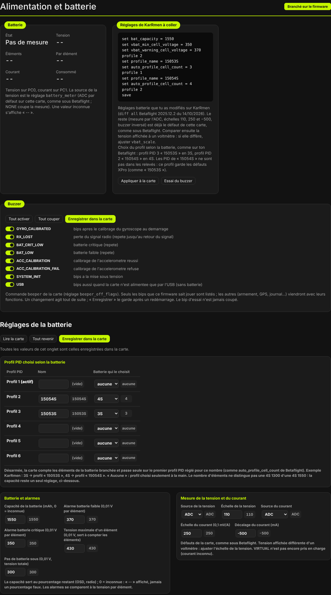
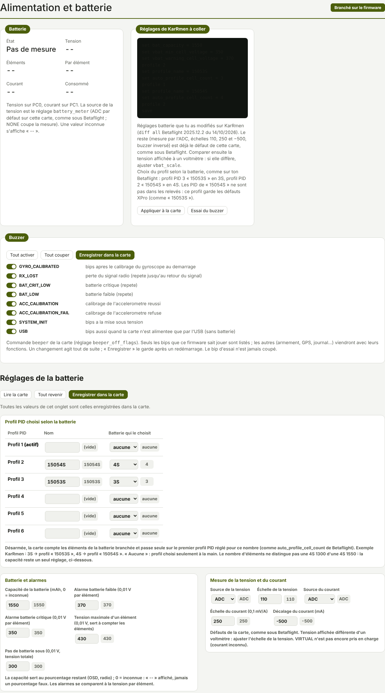

TRUEGLIDE
TRUEGLIDE Alimentation et batterie
L'onglet Alimentation et batterie montre ce que la carte mesure sur la batterie : tension, nombre d'éléments, tension par élément, courant et consommation. Il règle aussi la capacité, les alarmes, la mesure, le profil PID choisi selon la batterie (3S, 4S…) et les bips du buzzer. Une valeur que la carte ne connaît pas s'affiche « -- » : jamais un chiffre inventé.


Les mesures
Le cadre Batterie se met à jour deux fois par seconde quand la carte est branchée. La tension arrive sur la broche PC0, le courant sur PC1. Une mesure de plus d'une seconde s'affiche « -- ».
| Case | Ce qu'elle montre |
|---|---|
| État | Pas de mesure (source de la tension sur NONE), Absente (USB seul), Détection… (batterie branchée, éléments pas encore comptés), OK, FAIBLE, CRITIQUE. |
| Tension | Tension totale de la batterie, lissée pour l'affichage. |
| Éléments | Nombre d'éléments détecté (1S à 12S). |
| Par élément | Tension totale divisée par le nombre d'éléments. |
| Courant | Courant du capteur de l'ESC, en ampères. |
| Consommé | mAh consommés depuis le branchement de la batterie. |
La source de la tension est le réglage battery_meter : ADC par défaut sur la SpeedyBee F405
Mini, comme sous Betaflight ; NONE coupe la mesure. La source du courant est current_meter
(NONE, ADC ou VIRTUAL). VIRTUAL n'est pas encore pris en charge : le courant reste alors inconnu.
Éléments détectés
Sous la tension totale vbat_detect_cell_voltage (3,00 V par défaut), la carte considère qu'il n'y a pas
de batterie : elle n'est alimentée que par l'USB. L'état est Absente (USB seul) et la consommation repart
de zéro.
- La batterie est branchée : état Détection….
- La carte attend une tension stable (à ±3 % près) pendant 1 seconde. Le nombre d'éléments n'est jamais compté pendant le branchement, quand les contacts rebondissent.
- Elle compte les éléments d'après
vbat_max_cell_voltage(4,30 V par défaut) : le plus petit nombre d'éléments qui ne dépasse pas cette tension par élément. - Si la tension par élément dépasse ensuite
vbat_max_cell_voltagede plus de 0,3 V, le comptage était faux : la carte recompte.
Seuils et alarmes
| Réglage | Rôle | Défaut | KarRmen |
|---|---|---|---|
vbat_max_cell_voltage | Tension maximale d'un élément ; sert à compter les éléments. | 430 (4,30 V) | défaut |
vbat_warning_cell_voltage | Alarme FAIBLE sous cette tension par élément. | 350 (3,50 V) | 370 |
vbat_min_cell_voltage | Alarme CRITIQUE sous cette tension par élément. | 330 (3,30 V) | 350 |
vbat_detect_cell_voltage | Sous cette tension totale : pas de batterie (USB seul). | 300 (3,00 V) | défaut |
Les tensions se règlent en centièmes de volt. Une alarme se déclenche quand la tension par élément reste sous le seuil pendant 2 secondes. Pour en sortir, la tension doit remonter de 0,05 V par élément au-dessus du seuil. Les alarmes s'affichent dans les lunettes (BATTERIE FAIBLE, BATTERIE CRITIQUE) et font biper le buzzer.
Capteur de courant
Le courant vient du capteur de l'ESC. La carte le calcule ainsi : courant (mA) = tension de la broche (mV) ×
10 000 ÷ ibata_scale + ibata_offset.
| Réglage | Rôle | Défaut de la carte |
|---|---|---|
ibata_scale | Échelle du capteur, en 0,1 mV par ampère. | 250 |
ibata_offset | Décalage du capteur, en mA. | −500 |
vbat_scale | Échelle du pont diviseur de la tension (avec vbat_divider 10 et vbat_multiplier 1). | 110 |
Ce sont les défauts de Betaflight pour cette carte. Pour vérifier la tension : la comparer à un voltmètre posé
sur la prise de la batterie. Si elle diffère, ajuster vbat_scale.
Le courant affiché n'est jamais négatif (depuis la 0.8.3). La batterie ne se recharge pas en vol : une mesure sous zéro vient du décalage du capteur. À l'essai B8, KarRmen affichait −0,23 A au repos (« -0.3A » dans les lunettes) ; la carte affiche maintenant 0. Sur l'USB seul, le capteur n'est pas alimenté et sa broche ne donne qu'un décalage (−0,22 A relevé sur KarRmen) : la carte ne l'affiche pas comme un courant. Le courant et les mAh ne s'affichent que quand la batterie est reconnue.
Capacité et BAT %
bat_capacity donne la capacité de la batterie en mAh (0 = inconnue, défaut). KarRmen vole avec
1 550 mAh.
Depuis la 0.8.4, BAT % (batterie restante, dans les lunettes et à la radio) se calcule en deux temps :
- Au branchement, une fois les éléments comptés, la carte estime la charge de départ d'après la tension au repos d'un élément, sur la courbe de décharge publique d'une LiPo (3,27 V = 0 %, 4,20 V = 100 %).
- Ensuite, elle retire la part consommée : BAT % = charge de départ − mAh consommés × 100 ÷
bat_capacity.
Exemple réel : au premier vol V1, la batterie de KarRmen partait à 3,72 V par élément. La 0.8.3 affichait
BAT 99 %, car elle ne comptait que les mAh. La 0.8.4 part d'environ 18 %. Le temps de vol restant
estimé tient compte de cette charge de départ.
Sans courant mesuré ou sans bat_capacity, BAT % n'est pas calculé : les lunettes affichent
« -- ».
bat_capacity est un seul réglage pour toutes les batteries : la tension ne permet pas de distinguer une
4S 1300 mAh d'une 4S 1550 mAh. Avec plusieurs capacités, régler la plus petite : BAT % baisse alors trop vite avec
la grande batterie, jamais trop lentement.
Profil PID selon la batterie
Comme auto_profile_cell_count sous Betaflight : chaque profil PID peut être lié à un nombre
d'éléments. Drone désarmé, quand la carte a compté les éléments de la batterie branchée, elle passe seule sur
le premier profil réglé pour ce nombre. Armé, le profil ne change jamais.
Le cadre Profil PID choisi selon la batterie liste les 6 profils avec leur nom et la batterie qui les choisit (« aucune » = profil choisi seulement à la main). Ce sont des réglages par profil : le logiciel passe sur chaque profil pour les lire ou les changer, puis revient au profil actif. Deux profils avec le même nombre d'éléments sont signalés : seul le premier serait choisi.
| KarRmen | Nom | Batterie |
|---|---|---|
| Profil PID 2 | 15054S | 4S (Tattu R-Line 1300 et 1550, Funfly 1550) |
| Profil PID 3 | 15053S | 3S (Tattu R-Line 1550) |
Réglages de KarRmen à coller
Le cadre Réglages de KarRmen à coller reprend les trois réglages batterie que KarRmen avait changés sous
Betaflight (diff all du 14/10/2026) et le choix du profil selon la batterie :
set bat_capacity = 1550
set vbat_min_cell_voltage = 350
set vbat_warning_cell_voltage = 370
profile 2
set profile_name = 15053S
set auto_profile_cell_count = 3
profile 1
set profile_name = 15054S
set auto_profile_cell_count = 4
profile 2
saveprofile 1 = profil PID 2 (numérotation de Betaflight, à partir de 0). Les PID du profil « 15054S » de
Betaflight ne sont pas dans les relevés : ce profil garde les défauts XPro, comme « 15053S ».
Appliquer à la carte les envoie. Essai du buzzer fait biper la carte.
Les bips
Le cadre Buzzer liste les bips que ce firmware sait jouer, avec un interrupteur pour chacun :
| Bip | Quand |
|---|---|
GYRO_CALIBRATED | après le calibrage du gyroscope au démarrage |
RX_LOST | perte du signal radio, répété jusqu'au retour du signal |
BAT_CRIT_LOW | batterie critique (répété) |
BAT_LOW | batterie faible (répété) |
ACC_CALIBRATION | calibrage de l'accéléromètre réussi |
ACC_CALIBRATION_FAIL | calibrage de l'accéléromètre refusé |
SYSTEM_INIT | mise sous tension |
USB | bips aussi quand la carte n'est alimentée que par l'USB |
Un changement agit tout de suite. Enregistrer dans la carte le garde après un redémarrage.
Tout activer et Tout couper agissent sur toute la liste. Le bip d'essai n'est jamais coupé. Les bips
coupés sont gardés dans beeper_off_flags (0 = tous actifs, défaut). En ligne de commande :
beeper pour la liste, beeper -RX_LOST pour couper un bip, beeper RX_LOST pour
le remettre, puis save.